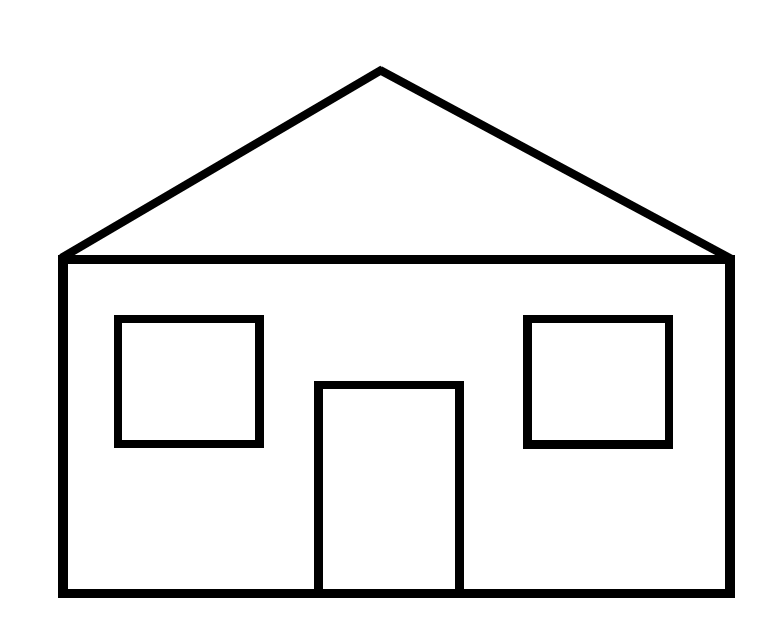

Focus
The focus is the part of the web page that currently receives the input of the keyboard. For example, an online application form could have a box for the first name and last name. If the user is currently typing in the first name box, the focus is on the first name box. Not all elements on a website are capable of receiving the focus. Usually only elements that can be interacted with using the keyboard such as input boxes, links or buttons can receive the focus. By contrast, items such as paragraphs, headings or images are not generally capable of receiving the focus, unless the web developer has specifically designed the page to make that possible.
Focus & Tab Order
To move the focus to an element, the user can either click on the item with the mouse, or press the TAB key. Pressing the TAB key moves the focus to the next element capable of receiving the focus, and pressing the SHIFT & TAB key together moves the focus back. Once the user gets to the end of the page, the focus should go back to the first element. On this website, a black or white box appears (changing according to the background colour) around the element where the focus is. Most websites do not have any special formatting to indicate where the focus is. However, your web browser will indicate where the focus is by putting a box around the element with the current focus, which is typically a blue or dotted box. The browser generated focus indicators (a blue or dotted box) can be difficult to see. Below are three example elements capable of receiving the focus; a link, an edit area where you can type in text and a checkbox. Try using TAB and SHIFT & TAB to navigate between them.
Example Items that Receive the Focus
Example Link - Focus (Top of page)Atypical Elements with Focus
Sometimes, elements which do not normally take the focus are able to receive the focus. This can happen where an element has another element embedded inside of it. For example, an image, which normally does not receive the focus, will receive the focus if it has a link inside the image (so the user can click on the image or press ENTER when the image has the focus to open a new page). Also, some designers may choose to code the page so that an element can take the focus. For instance, a heading could be made to accept the focus.
The image below has a link to the AccessiblityWeb home page. This image is capable of receiving the focus because it has a link.
The heading below can take the focus because it has been programmed to do so.
Heading with Focus
Keyboard Trap
A keyboard trap occurs when a user can reach an element or set of elements using the TAB key, but cannot navigate away from that element or set of elements using the TAB key. This only happens if the page has been poorly designed. One way out of a keyboard trap for users who cannot use the mouse is by refreshing the page (F5 key), which can put the focus back onto the beginning of the page depending on the browser. However with some browsers refreshing does not put the focus back onto the beginning of the page so the focus remains stuck in the keyboard trap. In that case the page will need to be closed by pressing the ALT + F4 keys in Windows or Command W on Mac.
There is a keyboard trap in the example form below. There are three input boxes. The focus will get stuck in the second input box.